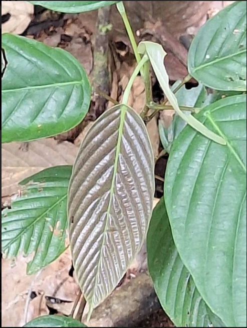

Families
The broadest group on this site. Meet Dipterocarpaceae and Lauraceae.
View familiesCitizen science for Malaysia's plant biodiversity
The Explorer works like a small plant encyclopedia. Scientists sort every living plant into groups, from very broad to very specific. On this site we focus on three of those levels: families, genera and species. Each level is linked to the others, so you can start with a family and move down to its genera and species, or start with a species and work your way back up.
We have chosen two plant families that are important in Malaysian forests. The Dipterocarpaceae family includes many of the giant trees that form the rainforest canopy and supply valuable timber. The Lauraceae family, also called the laurel family, contains aromatic trees and shrubs whose leaves and bark often smell spicy when crushed; cinnamon, bay leaf and avocado all belong to it. Several members of both families are now considered endangered, rare or threatened.
The broadest group on this site. Meet Dipterocarpaceae and Lauraceae.
View familiesTwo genera from each family, including Dipterocarpus, Monotes, Beilschmiedia and Cryptocarya.
View generaTwo species from each genus, with photos, origins and key features.
View species
| Family | Genus | Species |
|---|---|---|
| Dipterocarpaceae | Dipterocarpus | Dipterocarpus alatus, Dipterocarpus tuberculatus |
| Monotes | Monotes adenophyllus, Monotes glaber | |
| Lauraceae | Beilschmiedia | Beilschmiedia berteroana, Beilschmiedia costaricensis |
| Cryptocarya | Cryptocarya adpressa, Cryptocarya alba |
Have a photo of an unknown plant? Upload it and let our engine suggest a match.
Go to IdentifySee plant photos and comments shared by citizen scientists across Malaysia.
Go to ContributorsPlant list based on the unit's PlantsData document and iNaturalist.